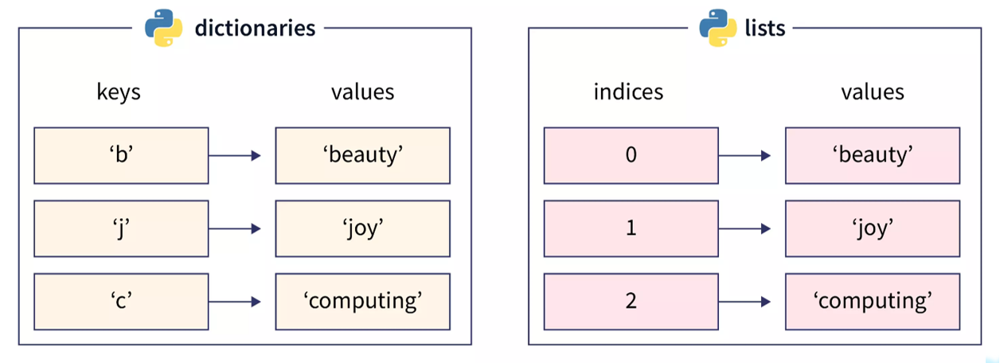

Datentypen
F-Strings
Wenn Sie bei normalen Strings Variablen einfügen wollen müssen Sie dies mühsam mit der String-Concats machen. Zusätzlich erlauben F-Strings das spezifizieren des gewünschten Formates. Die definition von F-Strings ist auch .
normal_string = "string plus"+str(variabel)
print("string plus ",variabel)
f_string = f"string plus {variabel}"
print(f"string plus {variabel}")Das kann auch mit mehreren Variablen gemacht werden
#runden (4 stellen nach dem Komma)
pi = 3.141592653589793
print(f"{pi:.4f}") #3.1415
#0-padding (5 stellen vor dem Komma)
print(f"{12:05}") #00012
#binar
print(f"{3:b}") #11
#hex
print(f"{11:x}") #b
#oktal
print(f"{11:o}") #13Sequenzen
- Zeichenketten (Strings) - Tuples
Eigenschaften: - keine neuen Elemente einfügbar - Werte von Elementen nicht veränderbar
- Listen
Eigenschaften: - neue Elemente können eingefügt werden - Elemente können entfernen werden - Werte von Elementen können verändert werden
Tuples
Tuples sind eine geordnete Sequenz von Elementen und verfügt deswegen über alle standard Sequenz-Funktionalitäten. Ein Tuple wird mit normalen Klammern ( ) definiert. ::: callout-note Ein Tuple Elemente von verschiedenen Datentypen besitzen. Klammern sind optional. :::
x = 1
my_tuple = (1,2,4,"word",x)
print(my_tuple[0]) #1
for elem in my_tuple:
print(elem) #1
#2
#4
#...
1 in my_tuple #True
(1,2) in my_tuple #False: (1,2) ist ein Tuple in einem Tuple
len(my_tuple) #5
my_tup = 1,2 #Klammern optional
x,y = my_tup #x=1 y=2Aber Achtung Tuples sind nicht veränderbar!
Falls jedoch werden, kann die angewendet werden.
elem1 , *rest = my_tuple
print(elem1) #1
print(rest) #[2, 4, 'word', 1]
first, *middle, last = my_tuple
print(first) #1
print(middle) #[2, 4, 'word’]
print(last) #1Hierbei sind die , eine muss lediglich mit * beginnen.
Listen
Eine Liste ist eine Eine Liste kann einfach mit [] definiert werden.
my_list = [1,2,"String",2.0]
my_list[0] #1
for elem in my_list: #1 2 String 2.0
1 in my_list #True
#Sind veränderbar
my_list[0] = "a" #['a', 2, 'String', 2.0]
my_list[0:2] = [30,34] #[30, 34, 'String', 2.0]Die Elemente in einer Liste können auch verschiedene Datentypen aufweisen.
Listen Funktionen
my_list = [1,2,3,4]
#Element Löschen
elem = my_list.pop(0) #elem=1 my_list=[2,3,4]
#Element Hinzufügen am Ende
my_list.append(5) #my_list=[2,3,4,5]
#Hinzufügen an einem Spezifischen Index
my_list.insert(0,"a") #my_list=["a",2,3,4,5]
#Liste am Ende einer Liste anfügen
my_list.extend([1,2,3]) #my_list=["a",2,3,4,5,1,2,3]
#entfernt die erste Instanz von 1
my_list.remove(1) #my_list=["a",2,3,4,5,2,3]
#alle Einträge einer Liste löschen
my_list.clear()Wenn value bei .remove() nicht in der Liste ist, gibt es einen Value_Error
Wenn eine (floats und ints) beinhaltet kann diese ebenfalls mit .sort() der Grösse nach aufsteigen sortiert werden. Oder eine Liste kann mit .reverse() umgekehrt werden.
my_list = [5,3.0,2,1,10,30]
my_list.sort() #[1, 2, 3.0, 5, 10, 30]
my_list.reverse() #[30, 10, 5, 3.0, 2, 1]List Copy by Reference
my_list = [1,2,3]
my_list_2 = my_list
my_list_2[2] = 4
print(my_list) #[1, 2, 4]Mutables werden mit Copy by Refernce kopiert das heisst das my_list2 mithilfe eines Zeigers auf die Speicherstelle von my_list zeigt. Wenn my_list2 geändert wird, ändert sich auch my_list und umgekehrt!
Um richtig zu Kopieren gibt es die .copy() Methode.
my_list_2 = my_list.copy()
my_list_2[2] = 5Die .copy() Methode erzeugt ein neues Objekt im Speicher und weist die neue Variabel darauf zu.
Mutable Default Values
def add_to_list(item, list_to_add:list=None):
if list_to_add is None:
list_to_add = []
ist_to_add.append(item)
return list_to_addWenn keine Liste übergeben wird, wird dies Detektiert. Darauf wird eine neue (leere) Liste erstellt.
Listen und Schleifen
Python unterstützt die sogenannte , welche es erlaubt in einem 1-Zeiler Listen nach bestimmten Regeln zu erstellen.
#List erstellen mit Schleifen
my_list_2 = [i for i in range(10)]
#List erstellen mit Schleifen und einer Funktion
my_list = [my_func(elem) for elem in my_list_2]
#List erstellen mit Bedingungen
my_list = [elem**2 if elem%2==0 else elem for elem in my_list_2][ if else for x in sequence]
Heisst es wird auf jedes Element der Sequenz angewendet wenn die wahr ist. Ansonsten wird die angewendete.
Sets
Sets sind Listen, welche Die Items in einem Set sind , jedoch kann man Elemente .
Syntax: {}
my_set = {"apple","banana", "pear"}
#Hinzufügen .add()
my_set.add("pineapple")
#{'banana', 'pineapple', 'pear','apple'}
#Bei mehrfach hinzufügen passiert nichts!
my_set.add("pineapple")
#Entfernen .remove()
my_set.remove("apple")
#{'banana', 'pear', 'pineapple'}Wenn das zu entfernende Item nicht vorhanden ist, gibt es eine KeyError. Bei mehrfach hinzugefühen des gleichen Elementes, passiert nichts.
Vergleich von zwei Sets
B ist ein von A (B \(\in\) A)
A ist ein von B (A \(\subset\) B)
my_set_A.issuperset(my_set_B)
my_set_B.issubset(my_set_A)Dictionaries
Ein Dictionary, kurz dict, ist eine Datenstruktur, welche das von erlaubt. Anders als bei Listen, werden hier die Werte (Values) nicht mit Indices sondern mit Beim Dictionary wie auch beim Set sind die Keys
Syntax: {:}, my_dict = {"key1":"value"}
my_dict = {"key1":"value"}
my_dict["key1"] #'value'
Die Keys sowohl Strings wie auch Ints oder Floats sein. Jedoch sollten in der Regel Strings als Keys verwendet werden.
Hinzufügen von Elementen in Dicts
my_dict["a"] = "value1"
my_dict["b"] = "value2"
my_dict["a"] = "value3" #überschreiben von key anested dict
my_dict = {"John":{
"Age": 48,
"Gender": "m",
"Profession":"Carpenter"
}
}
for key in my_dict:
print(key) #John
for key,value in my_dict.items():
print(f"{key}: {value}") #John: {'Age': 48, ...}
"John" in my_dict.keys() #True
"Age" in my_dict["John"].keys() #TrueFalls gleichzeitig geprüft werden soll: ob ein Key existiert, was für einen Wert dieser hat, und falls der Key nicht existiert dieser mit einem Default Wert erstell werden soll. Gibt es dafür die set_default() Methode:
print(my_dict.setdefault("Robert",{}))
set_default()
Gibt den Wert von «Robert» zurück, erstellt dieses Key-Value-Pair mit Default Value falls nicht vorhanden
.pop(key, default_return)
Die .pop(key) Methode kann verwendet werden, um den Wert eines Keys zu erhalten und diesen Key zu löschen.
my_dict.pop("Robert")
my_dict.pop("Klaus","Key nicht vorhanden")
#'Key nicht vorhanden'Pretty Print
In Python gibt es Module (vorgeschriebener Code) welcher importiert werden kann. Eines dieser Module ist das PrettyPrint Modul (pprint), welches eigene print() Funktionen zur Verfügung stellt.
Einer dieser Funktionen ist das «schöne» Printen von Dictionaries. So kann zB genau spezifiziert werden: - eines Dictionaries überhaupt geprinted werden sollen () - zwischen Levels geprinted werden soll ()
import pprint
pp = pprint.PrettyPrinter(depth=1, indent = 3)
pp.pprint(my_dict)Dict-Comprehension
{key:value for elem in iterable} Hierbei ist oft so dass sowohl key wie auch value eine sind.
my_dict_2 ={f"Key_{elem}":f"Value_{elem}" for elem in range(10)}
"""
{
'Key_0': 'Value_0', 'Key_1': 'Value_1', 'Key_2': 'Value_2’,
. . .
'Key_9': 'Value_9’
}
"""JSON
Was wenn man nun ein Dictionary in einem File abspeichern will? Dafür gibt es das JSON steht für JavaScript Object Notation und ist ein standardisiertes File Format, um unter anderem Dictionaries abspeichern zu können. Um ein Dict abzuspeichern hat das json Modul die .dump() Methode.
# JSON Modul importieren
import json
# öffnen eines Files
with open(file="dict.json",mode = "w+") as fp:
# speichern (schreiben) des Dicts in das File
json.dump(obj = my_dict, fp = fp, indent= 4)Ein Dict kann natürlich auch von einem JSON File erstellt werden. Dafür muss wiederum das JSON Modul verwendet werden. Hierzu hat das json Modul die .load() Methode.
# öffnen des JSON files
with open(file="dict.json", mode = "r+") as fp:
# auslesen des Dicts
my_read_dict = json.load(fp=fp)
pp.pprint(my_read_dict)